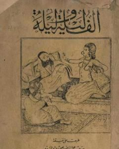

كتاب الف ليلة و ليلة

"ألف ليلة وليلة" هي مجموعة من القصص والحكايات الشهيرة في الثقافة العربية والإسلامية، وهي تدور حول شخصية شهرزاد التي قصدت الملك شهريار كل ليلة قصة لتبقيه يشغل نفسه بالاستماع إليها بدلاً من قتل العوانس. ومن خلال هذه القصص، تركز "ألف ليلة وليلة" على الحكمة والأخلاق والشجاعة والحب والخيانة والأساطير.
تتألف المجموعة من العديد من الحكايات المختلفة، مثل "علي بابا والأربعين لصًا" و "الأميرة شهرزاد" و "علاء الدين والمصباح السحري". وكما هو الحال في القصص الشعبية الأخرى، فإن هذه القصص تحتوي على شخصيات غريبة ومناظر خلابة وأحداث مثيرة.
تعتبر "ألف ليلة وليلة" إرثًا ثقافيًا هائلًا للشعوب العربية والإسلامية، وقد تم ترجمتها إلى العديد من اللغات الأخرى. ولا تزال هذه القصص محبوبة حتى اليوم، حيث تستخدم كثيرًا في الأفلام والأعمال الأدبية الحديثة.